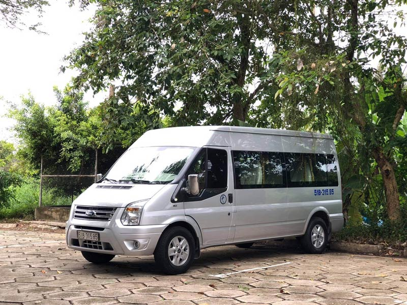

CHO THUÊ XE Ô TÔ DU LỊCH 16 CHỖ GIÁ RẺ TẠI TPHCM
Nhằm đáp ứng nhu cầu đi lại đang tăng cao hiện nay Công ty cho thuê xe du lịch chúng tôi có cung cấp cho thuê xe 16 chỗ có tài xế đưa đón tận nơi. Công ty cho thuê xe 16 chỗ giá rẻ tại TPHCM với nhiều dòng xe đa dạng, số lượng xe lớn đáp ứng được tối đa nhu cầu đi lại của khách hàng.
1. Dịch vụ cho thuê xe của công ty chúng tôi
Dịch vụ cho thuê xe du lịch chúng tôi với hơn 10 năm kinh nghiệm trong nghề từ chất lượng phục vụ uy tín, tài xế lái xe chuyên nghiệp cho đến cơ sở vật chất trang thiết bị tiện nghi hiện đại mang đến cho khách hàng những trải nghiệm tuyệt vời nhất. Chúng tôi luôn mong muốn mang đến cho khách hàng trải nghiệm về những chuyến đi an toàn, êm ái trên từng chặn đường. Ngoài những dịch vụ trên, chúng tôi còn cung cấp cho bạn đa dạng các loại xe để bạn thoải mái lựa chọn như KIA K3, Honda City, Mazda, Toyota Vios, Fortuner, Innova, Hyundai và Ford Transit, Universe, Thaco Town, Isuzu Samco, Hyundai County, Space.
2. Thuê xe 16 chỗ loại nào?
Tại dịch vụ cho thuê xe du lịch Trí Tài cung cấp nhiều dòng xe khác nhau và có thương hiệu trên thị trường. Các dòng xe tại Trí Tài bao gồm:
2.1 Dòng xe 16 chỗ Hyundai Solati
Giới thiệu về dòng xe 16 chỗ Hyundai Solati Xe 16 chỗ Hyundai Solati là một dòng xe mới ra mắt và cao cấp nằm trong phân khúc dòng xe 16 chỗ hiện nay. Sau khi đã được cải tiến và đổi mới không chỉ về hình dáng và công nghệ thì hãng đã quyết định đổi tên mới cho dòng xe này là Hyundai Solati. Mặc dù chỉ xuất hiện tại thị trường trong những năm gần đây tuy nhiên Hyundai Solati đã gây ra được nhiều tiếng vang tốt khiến cho nhiều đối thủ phải kinh sợ.
Ngoại thất xe Hyundai Solati
Điều làm nên nét nổi bật cho dòng xe là ở phần ngoại thất. Với thiết kế dải đèn xe chiếu sáng cả ngày, tất cả các bộ phần đều được chiếu sáng và đèn sương mù được ứng dụng công nghệ hiện đại giúp cho việc chiếu sáng tối đa và tiết kiệm được nguyên liệu một cách tối ưu. Về tổng quan Hyundai được thiết kế theo kiểu dáng và phong cách Châu Âu tuy nhiên vẫn giữ được nét đặc trưng của dòng Hyundai thuần túy. Không chỉ mang theo vẻ ngoài sang trọng độc đáo mà công năng và hiệu suất vận hành xe cũng là một điểm đáng chú ý.
Nội thất Hyundai Solati
Bên trong nội thất của dòng xe này cũng không hề kém cạnh ngoại thất và mang đến nhiều hiệu ứng tích cực từ phía khách hàng. Ở phần vị trí ghế ngồi và tay lái được trang bị với vỏ bọc chắc chắn được làm từ da cao cấp mang đến sự thoải mái và sang trọng. Đồng thời, bên trong xe có thêm một thiết bị làm mát vô cùng hữu ích, thiết bị không chỉ được làm lạnh mà còn giúp lưu thông không khí trong xe. Không gian trong xe cũng làm điểm đáng để chú ý khi trần được đẩy cao, khoang hành lý rộng tiện cho việc chứa nhiều đồ và vali khác nhau.
2.2 Dòng xe 16 chỗ Ford Transit
Giới thiệu về dòng xe 16 chỗ Ford Transit
Xe 16 chỗ Ford Transit năm 2023 với nhiều tính năng và thiết kế tăng hảo cảm của khách hàng tại Việt Nam. Xe thiết kế với nhiều tính năng thông minh nhằm hỗ trợ một cách tốt nhất cho người lái cũng như đáp ứng được nhu cầu của khách hàng. Ford Transit hiện nay được sử dụng với nhiều mục đích khác nhau như: Đưa rước khách, du lịch, đám cưới, đám hỏi, đi chơi dã ngoại,…
Ngoại thất xe Ford Transit
Kết hợp giữa tính năng hiện đại và chuyên nghiệp đã làm nên dòng xe Ford Transit với nhiều chức năng đa dạng. Tính năng bên ngoài của dòng xe này vô cùng đa dạng như: Mâm đúc 16 inch, phanh đĩa trước và sau, đèn pha thấu kính Halogen và đèn LED ban ngày, đèn sương mù, gương chiếu hậu chỉnh điện, khóa cửa điện trung tâm, khóa từ xa, khung cửa trượt an toàn.
Nội thất xe Ford Transit
Nội thất của xe Ford Transit năm 2023 được cải tiến và thiết kế dựa trên nhu cầu của người dùng, đây là phương tiện đáp ứng được nhu cầu đa dạng cho việc di chuyển.
3. Dịch vụ cho thuê xe có tài xế tại công ty thuê xe
Hiện nay do nhu cầu đi lại và di chuyển ngày một thịnh hành nên các dịch vụ cho thuê xe có tài xế đưa rước cũng theo đó mà phát triển. Dịch vụ cho thuê xe Trí tài là một trong số đơn vị hàng đầu chuyển cho thuê, nhận chở khách với nhiều tiện ích và sự chuyên nghiệp tận tâm. So với các hình thức và dịch vụ khác, dịch vụ cho thuê xe Trí Tài luôn là sự lựa chọn tin tưởng hàng đầu và được khách hàng đánh giá cao về chất lượng.
Liên hệ báo giá